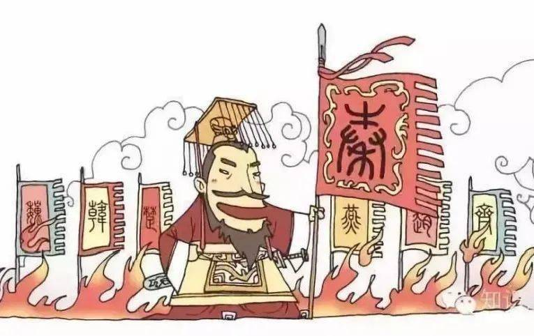
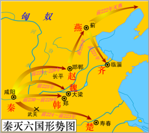
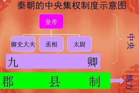

在中国历史上，秦灭六国之战是战国末期秦国消灭六个诸侯国并最终统一中国的重要战争。这场战争历时15年，从前236年开始攻打赵国，到前221年灭齐国结束，秦国先后灭掉了韩、赵、魏、楚、燕、齐六国，最终结束了自春秋以来500多年的诸侯割据局面，建立了中国历史上第一个君主中央集权的国家——秦朝。 |
|
背景战国时期，诸侯国为争夺土地和权力不断爆发战争。商鞅变法为秦国打下了强盛的基础，通过改革社会制度和经济结构，秦国逐渐建立了强大的中央集权国家，军队装备精良，国力日益增强。与此同时，关东六国逐渐走向衰败，给了秦国统一天下的机会。秦王政（即秦始皇）在李斯和尉缭的辅佐下，制定了“灭诸侯，成帝业，为天下一统”的战略方针，开始了统一战争。 |
 |
过程秦国统一六国的过程可以分为按顺序消灭的六国展开：
|
 |
统一后的影响秦朝的建立结束了长期的分裂局面，确立了中国历史上第一个中央集权的君主制国家。统一后的秦国在疆域上东至大海，西达临洮，南至北向户，北至河套和阴山。秦始皇还进行了系列改革，如统一度量衡、货币和文字，加强中央集权，为后世奠定了中国统一国家的雏形。 |
 |
结论
秦灭六国的成功在于其强大的军事实力、先进的制度以及善于利用各国内部矛盾的策略。这场战争不仅结束了战国时期的动荡局面，还标志着中华大地进入了大一统的时代。虽然秦朝因暴政而迅速衰亡，但其建立的制度和统一政策深远影响了中国历史的发展。